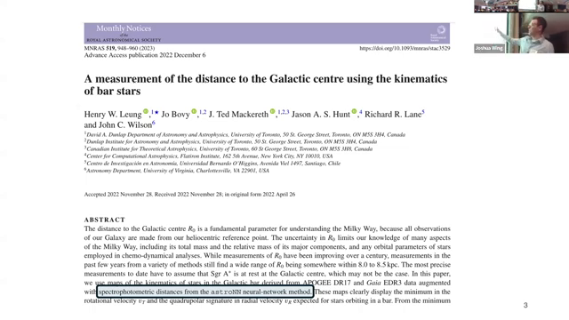
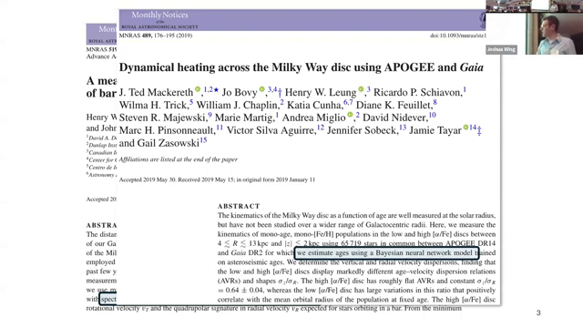
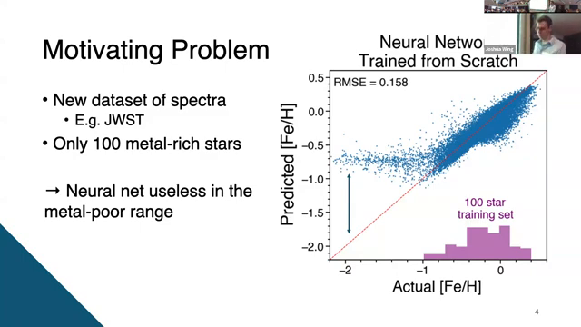
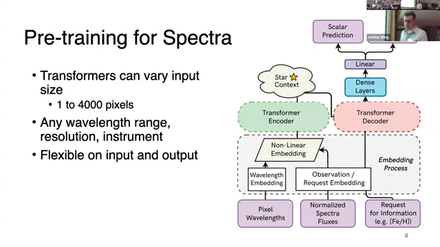
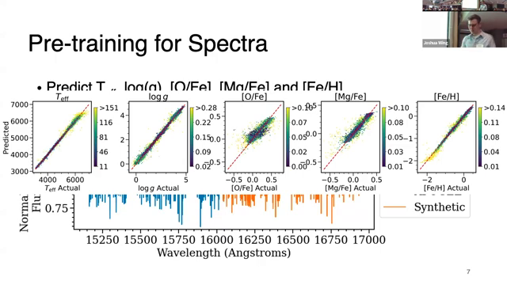
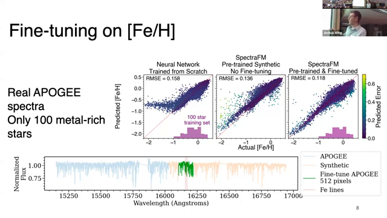

Screenshots for Video 2BXLR-UYUns
Slide from 2 seconds before the transition at: 00:01

Slide from 2 seconds before the transition at: 00:05
Slide from 2 seconds before the transition at: 01:28

Slide from 2 seconds before the transition at: 01:40

Slide from 2 seconds before the transition at: 02:00

Slide from 2 seconds before the transition at: 03:06

Slide from 2 seconds before the transition at: 04:30

Slide from 2 seconds before the transition at: 06:21

Slide from 2 seconds before the transition at: 07:08

Slide from 2 seconds before the transition at: 09:00

Slide from 2 seconds before the transition at: 09:57

Slide from 2 seconds before the transition at: 09:57